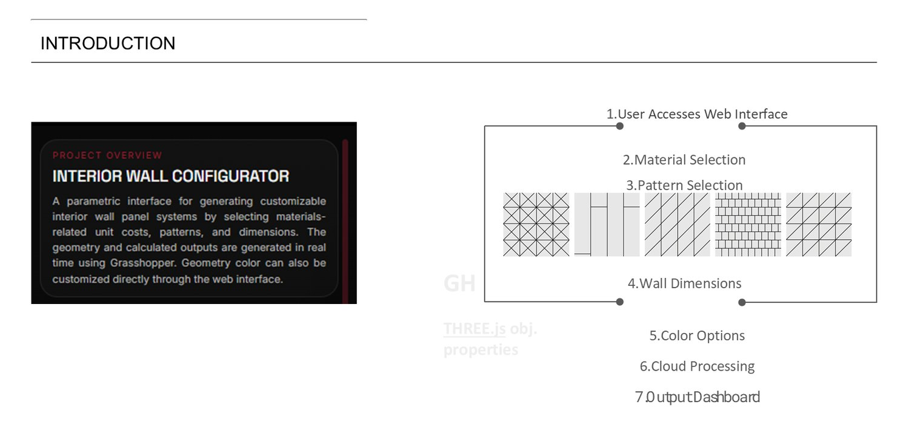
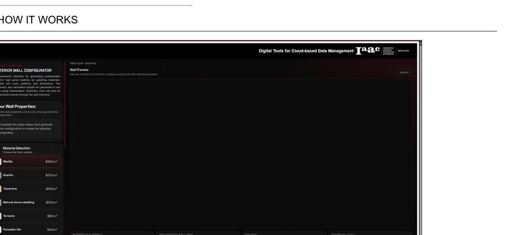

Interior Wall Configurator
Cloud Based Data ManagementA parametric web tool that lets anyone configure a custom interior wall panel system, pick the material, pattern, dimensions and colour, and watch geometry and cost update in real time. Selections travel to Grasshopper in the cloud and come back as a live 3D preview and a costed output dashboard, so the design logic stays in the browser and no CAD is required.
-
Browser-basedconfigure without CAD
-
Grasshopper in the cloudgeometry computed server-side
-
Real-time outputlive geometry & cost
Cloud Based Data Management · Faculty: Justyna Szychowska · Chuck Driesler · Sophie Moore
How It Works
One guided flow, from browser to dashboard: the user opens the web interface, then selects material → pattern → wall dimensions → colour. Those choices are packed into object properties and sent to the cloud, where Grasshopper generates the panel geometry and a Three.js viewer renders it back live, ending in an output dashboard.

The Output Dashboard
The final screen turns raw object properties into a readable dashboard, the configured wall in 3D alongside its computed metrics and cost, ready to compare options and export. The whole round-trip, from a click to a priced panel, happens without ever leaving the web page.
